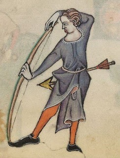

El Mundo del Arco
Recopilación realizada por Pablo Sturm
Conoce el Tiro con Arco
Reglamento, Tipos de Arco, Competiciones
Ver mas...
Distintos Tipos de Arco
Arco Recurvo, Arco Compuesto, diferencias
Ver mas...
Reglamento de Tiro con Arco
Tiro con Arco al Aire Libre, o en Salón
Ver mas...

El Arco en la Edad Media
Fabricación, elementos, flechas...
Ver mas...
¿Por que practicar Arquería?
Beneficios del Tiro con Arco
Ver mas...